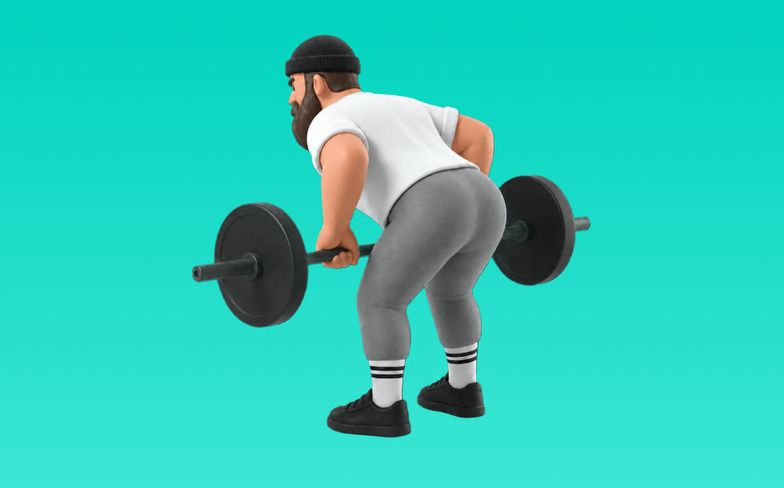

バーベルベントオーバーロウ

バーベルベントオーバーロウとは、バーベルを使って「引く」動作で背中（広背筋、僧帽筋、菱形筋）＋腕（上腕二頭筋）を鍛える種目です。高重量を扱いやすく、筋力を伸ばしやすいのが特徴で、体幹を固め、みぞおち付近へ引いて戻す動作を繰り返します。背中の厚み・広がり作りや姿勢改善が期待できます。
- 対象部位
- 背中
- 器具
- バーベル
- 記録形式
- 重量・回数
- 別名
- ベントロー / bor
YouTube動画
-
背中を鍛えるベントオーバーロウのやり方【筋トレ】
-
【初心者向け】ベントオーバーローのやり方｜効果的なフォームの解説
-
【初心者】バーベル・ベントオーバーローイングの一番わかりやすいやり方【ビーレジェンド プロテイン】
-
【背中の筋トレ】間違いだらけのベントオーバーロウ
-
背中の高負荷筋トレに挑戦！「バーベルベントオーバーロー」の正しいやり方
-
バーベルロウは時間の無駄？【筋トレ】
-
【有料級】背中デカくしたい人これやれ！効かせる天才ボディビル神奈川２位の持田式ベントオーバーローがマジで効き過ぎる
-
【圧倒的な背中(上背部)を作る】ベントオーバーロウを徹底解説。
-
【１分で解る筋トレ解説】バーベルベントオーバーロウ【筋トレライブラリー】
-
【山岸秀匡】広背筋の厚みをつける！バーベルベントオーバーロウ
-
広背筋を鍛えて引き締まった背中を手に入れる！「ダンベルベントオーバーロウ」の正しいやり方【15回×3セット】
-
背中が強い人は全員やっている！下背部の厚みをつけるベントオーバーロウのやり方！
-
【ベントオーバーローイング】初心者には実は難易度高すぎる背中種目を徹底解説！
-
ベントオーバーローのやり方
-
【筋トレ】背中を鍛えるデッドリフト・ベントオーバーローのやり方【広背筋】
YouTubeショート
-
持田選手にベントオーバーローについてレクチャーしていてもらいました！次はどの種目の解説をやってほしいかコメントしてね！#筋トレ #volix #トレーニング #fitness #workout
-
正しいベントオーバーロウのやり方
-
【筋トレ初心者必見 ! |バーベルロー(ベントオーバーロー)のやり方】日本人初ミスター・オリンピアに出場した、山岸プロが解説！ #山岸秀匡 #筋トレ初心者 #バーベルロー 続きはコメ欄から!
-
成長を感じたベントローのやり方※エゴイスト
-
背中が成長しないベントオーバーロウ #筋トレ
-
バーベルベントオーバーローイング（Barbell Bent Over Rowing）のやり方と基本フォーム
-
「超もったいない！！」ベントオーバーロウのNGフォーム3選 #筋トレ初心者
-
【バーベルを使ったベントオーバーロウの正しいやり方】狙いは背中の筋肉、肘を天に突き刺す意識で！｜Training Movie 100｜Tarzan
-
ベントオーバーは上体を起こすべきではない？
-
【背中を鍛える】ダンベルベントオーバーロウ【ボディメイク・ダイエット】
-
背中トレのやり方🔥〜ダンベルワンハンドロー基礎編〜 #筋トレ #マッチョ #筋肉社長 #背中トレ
-
背中トレ：ベントオーバーロウ
-
ベントオーバーロウのコツ🔥 #筋トレ #細マッチョ #細マッチョ #fitness #フィットネス
-
どのジムでもできる最強上背部種目！
-
うっっすい背中している奴がやるべきベントオーバー3つのコツ
-
絶対やるべき背中トレ種目！その名はワンハンドロー🥹#背中トレ #フィットネス #筋トレ
-
筋トレ歴1年未満はベントオーバーローやめとくべき理由
-
個人的に最も効果のある背中の種目3つを紹介 #筋トレ #フィットネス
-
ダンベル・ベントオーバーローの正しいやり方 | ボディビル日本チャンピオンが解説 #shorts【ビーレジェンド プロテイン】
-
みなさんはベントオーバーローやってますか？持田選手がしっかり広背筋に効くトレーニングをレクチャーしてくれました！#volix #背中トレ #ちょこっとおしい #広背筋 #volixgear
-
【どっちが良いの？】ベントオーバーローで背中を鍛え分けるグリップ #僧帽筋 #広背筋
-
正しいダンベルロウ4つのポイント #筋トレ
-
背中に効かせる背中トレ#背中トレ#背中トレーニング#ワンハンドロウ
-
【背中トレ解説】ベントオーバーロウ #筋トレ解説 #背中トレ #背中トレーニング
-
自宅で刃牙の背中を作る筋トレ！ダンベルロウの方法！#shorts
-
持田選手とハムちゃんにワンハンドローにについてレクチャーしていてもらいました！次はどの種目の解説をやってほしいかコメントしてね！#筋トレ #volix #ちょこっと惜しい
-
鬼の背中を作る！正しいベントオーバーロウの方法！#shorts #筋トレ #fitness
-
ベントオーバーローを1撃で効かせるポイント #shorts #筋肉 #パーソナルトレーナー #ダイエット #減量 #筋トレ #背中トレ
-
【山岸秀匡】広背筋の厚みをつける！バーベルベントオーバーロウ
-
【腰痛危険】ベントオーバーローの正しいやり方 #筋トレ
-
【ダンベル】背中トレ4選 #筋トレ
-
【これ、間違いです】腰反りベントオーバーローイング
動作方法
- 体幹を安定させ、背中が丸まらない姿勢を作る
- 肘を後方へ引き、肩甲骨を寄せる
- 勢いを使わず、ゆっくり戻す
動作ポイント
- 背中を丸めない
- 首に力を入れすぎない
- 戻しを速くしすぎない
ワンポイントアドバイス
- 腕ではなく背中で引く感覚を優先する
- 反動が増えたら重量を一段下げる
目的別回数設定
目的や体力に応じた一般的な目安です。無理のない範囲で調整してください。
- 筋力アップ
- 1〜5回
- 筋肥大
- 6〜12回
- 持久力アップ
- 13〜20回
YouTube動画について
動画はYouTubeの公開情報をもとに表示しています。内容は投稿者によるもので、Biggrによる監修ではありません。
アプリを入手
筋トレやトレーニングの記録はBiggrにお任せください。今すぐ無料で使い始められます。